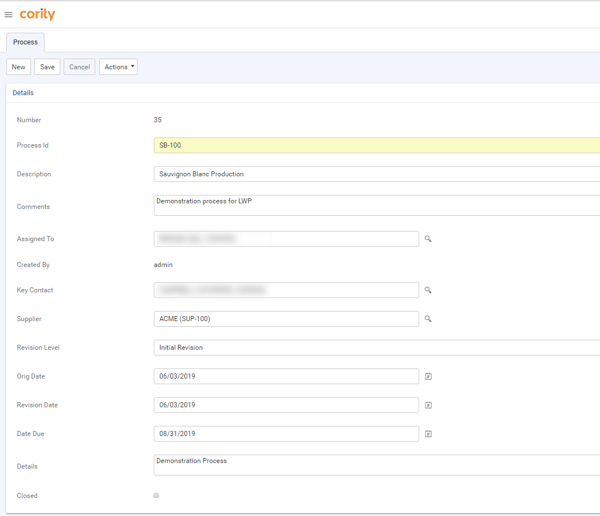
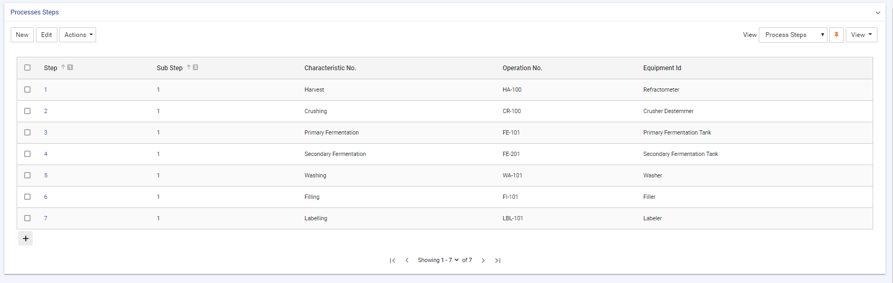

Before you create Process FMEA studies, you must identify the processes that you need to track. If you will have several FMEA studies of the same main process, you can record the common steps; these steps can be imported into a Process FMEA record as the basis of that study.
In the Quality menu click Production Processes.
If necessary, use the provided fields and views to filter the list. Click a link to edit a record, or click New.
Enter a Process ID and any other information you want to capture about this process:

Optionally, record the steps and substeps for this process:
